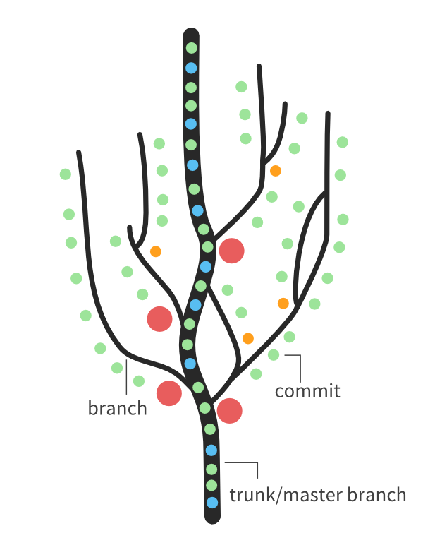
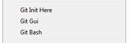

In my own words, GIT is a fail-proof system which allows people to work together on the same project, with almost no risk of losing data through accidental deletes or overwrites.
You can look at it really like a tree with the trunk having the main source code and the branches being the various features implemented using the trunk's data(basically copies of master).
From Git:
Git is a free and open source distributed version control system designed to handle everything from small to very large projects with speed and efficiency.
Lots of details can be found on their tutorial pages:
https://git-scm.com/book/en/v2/Getting-Started-Git-BasicsGo to https://git-scm.com/download/win. The download will start automatically.
Use their recommended settings, should be a succession of next next yes yes bla bla.
After you're done you should have something like this on right click anywhere(desktop, file stystem etc):
You're now set to go :D
Let's assume an empty directory called myapp.
Once you've done the above, clicking the GIT bash link from the right click menu will lead you to a terminal. Depending on what you prefer you can navigate to the myapp folder through the terminal or to just go through the windows file explorer -> right click -> GIT bash. Then go ahead and:
git initThe above sets de current directory and all subdirectories and files(empty right now) as part of the GIT versioning.
If all went well you will see a "Initialized empty Git repository in ..."
Doing a:
git statuswill likely generate the following:
On branch master
Initial commit
nothing to commit (create/copy files and use "git add" to track)At this point it's fine to configure your name and email as well as set the default color scheme for GIT files. The following will do these for you(one line at a time):
git config --global user.name "John Doe"
git config --global user.email johndoe@example.com
git config --global color.ui trueYou are now ready to git!
You can create/add files(through terminal: > filename.extension, or windows explorer) to that folder and a git status will display them in red as untracked. For example:
> whatever.html
git status
On branch master
Initial commit
Untracked files:(use "git add ..." to include in what will be committed)
whatever.html
nothing added to commit but untracked files present (use "git add" to track) What this means is that master(the main code 'place' aka the trunk) is empty but you have one file that isn't added on version control(i.e. invisible).
Go ahead and add it in:
git add -ADoing a git status now will show you whatever.html in green and with a 'new file:' prefix. What you've essentially done now is select which files you would like to be a part of the current branch(master/or trunk in this case), but you haven't really made them a part of master. You'll do that with a commit:
git commit -m 'master - Adding whatever.html in. First commit :d'
git status
On branch master
nothing to commit, working directory cleanSo now whatever.html is part of master, but if someone wants to work on master as well and use your whatever.html, they won't be able to see it because this commit was actually local. Nobody is able to see your 'repository' or the place where the code resides. So we now need to talk about a remote repository.
Git Hub has only free public repositories(i.e. anyone browsing your profile will see your code), Bit Bucket has unlimited private repositories.
That's all there is to it really. Pro for github is that it has a bigger exposure, as it's more popular than Bit Bucket(more people can check out your code).
That being said, I'll be using Bit Bucket since I think it looks and feels/works better than github, don't really care about private vs public on this one. Go ahead and create an account/or login to existing. https://bitbucket.org
Under the nav menu item Repositories, click on Create repository. Name it however you like or change any settings you want(except repository type...)
Now you'll be shown the repository setup. You should have a "I have an existing project" section, toggling it will show the necessary instructions to connect your local committed files to this newly created repository.
Since you're probably already in the source directory you will need to run only the 2nd and 3rd line, no need for the first and fourth.
You'll be asked to add your bitbucket password. After you've done that, it will(hopefully) give you some 'writing...' messages and a:
* [new branch] master -> master
Branch master set up to track remote branch master from origin.Pretty much yeah. These are the very basics of git. Although do keep in mind that working on master is considered very bad practice as master should be pretty much good to go code(i.e. realease code), so pushes to master should be done after several people have checked the code. In that case it's much better to create branches(i.e. copies of master which aren't really affecting it when committed and pushed).
More details about branches and more here:
https://git-scm.com/book/en/v2/Git-Branching-Basic-Branching-and-Merging